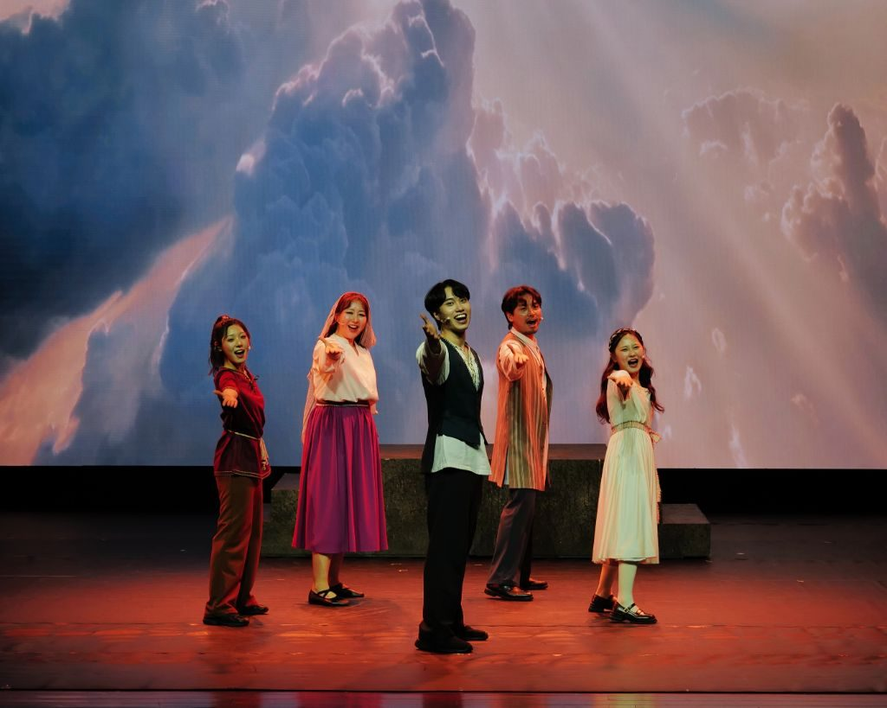
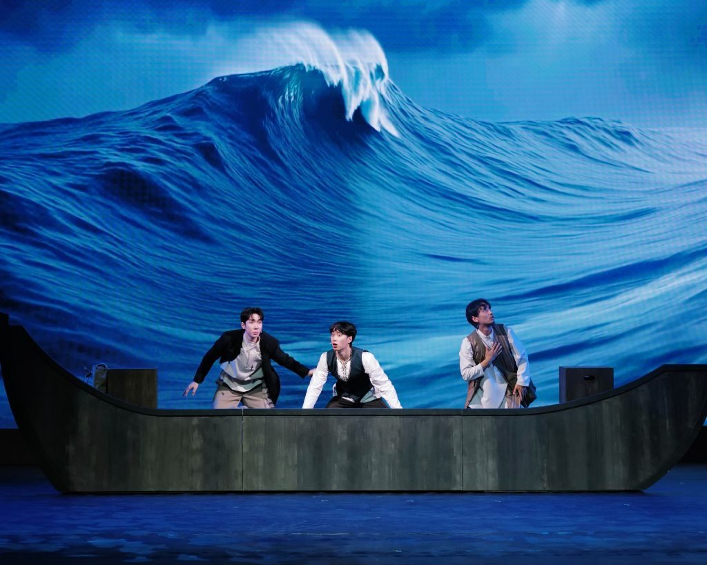
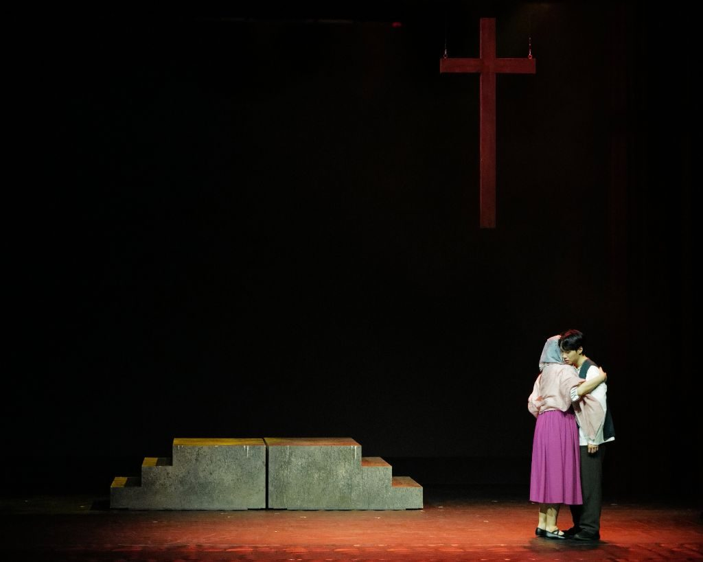

01작품
우리가 부르던 찬양이 한 사람의 이야기가 됩니다
가시나무 · 사명 · 원하고 바라고 기도합니다 외 7곡
첫 전도여행에서 돌아섰던 청년 마가가 다시 일어서기까지. 교회에서 오래 불러 온 찬양 열 곡으로 따라가는 90분입니다.
-

Ⅰ
기쁨
예루살렘의 환호 속에서 시작되는 여정
-

Ⅱ
두려움
폭풍 앞에서 마가는 돌아섭니다
-

Ⅲ
결단
용서 안에서 다시 사명 앞에 섭니다